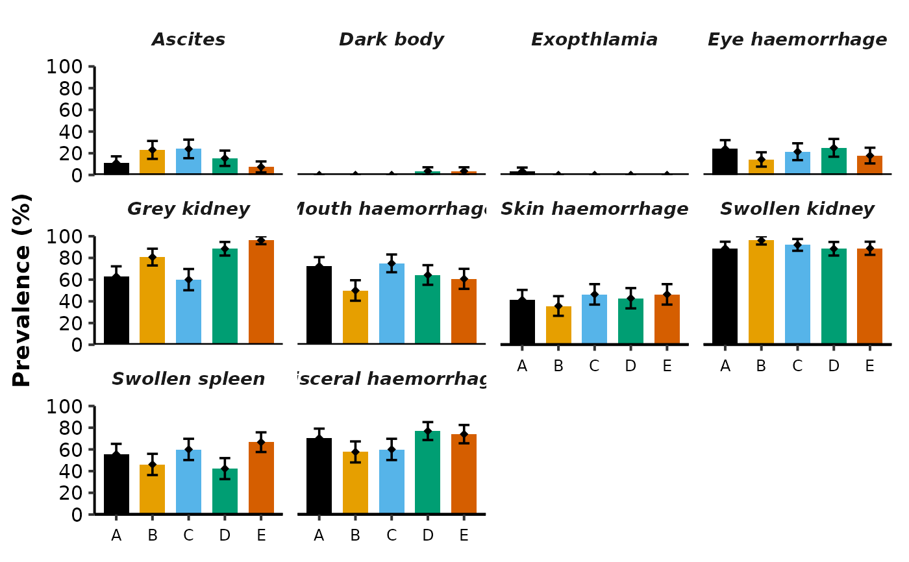
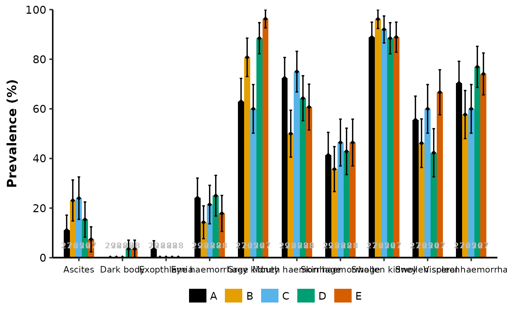
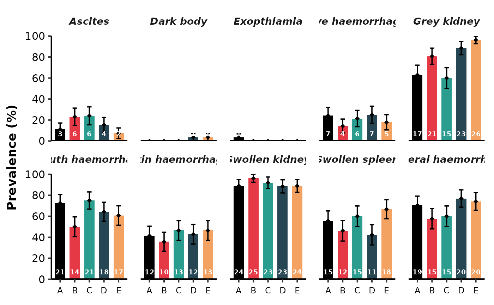

Creates a barplot which visualizes the summary statistics for pathological data generated using Path_Summary(). Creates a plot with each pathological sign in the x-axis or as single panels (by setting the argument facet_by_path = TRUE). Easily add details to plots such as standard error bars, and numbers/text representing the counts of prevalence or sample sizes for each bar; to do this, use the plot_ set of arguments.
Usage
Path_Plots(
path_sum,
factor = "Trt.ID",
colours = NULL,
facet_by_path = TRUE,
facet_rows = NULL,
facet_space_x = 0.3,
path_wrap = FALSE,
path_order = NULL,
minor_y_ticks = TRUE,
plot_errorbars = TRUE,
plot_errorbars_width = 0.3,
plot_text = NULL,
plot_text_size = 2.6,
plot_text_colour = "black",
plot_text_nudge_y = 0
)Arguments
- path_sum
A list containing the dataframes named
summary_dbandcontrast_dbwhich is the output ofPath_Summary().- factor
A string specifying the relevant factor - a column name in
summary_db. Defaults to "Trt.ID".- colours
A character vector specifying the colours to be used for each bar in the plot. Defaults to NULL (recommended colours or ggplot default colours when the unique number of factor levels exceed 6).
- facet_by_path
Whether to facet (create panels) for each pathological sign. Defaults to TRUE.
- facet_rows
Numeric representing the number of rows of panels. Defaults to NULL where rows are automatically determined.
- facet_space_x
A numeric representing the horizontal gap between pathology panels. Value used in
panel.spacing.x = unit(facet_space_x, "cm"). Defaults to 0.3.- path_wrap
Whether to text wrap labels for pathological signs. Wraps text after spaces; for example, wraps on "Mouth haemorrhage" to make it two horizontal layers. Defaults to FALSE.
- path_order
A character vector specifying the order of pathological signs in the plot. Defaults to NULL.
- minor_y_ticks
Whether to add ticks on the y-axis on minor breaks. Only available for non-facet plots. Defaults to TRUE.
- plot_errorbars
Whether to plot errorbars representing standard errors. Defaults to TRUE.
- plot_errorbars_width
A numeric representing the width of the errorbar. Defaults to 0.3.
- plot_text
A string indicating whether (and which) text should be indicated in the bottom of each bar plot. Text can be the number of samples, number of positives for that pathological sign, or none. Choose between "total n", "presence n", and NULL. Defaults to NULL.
- plot_text_size
A numeric representing the size of the text plotted. Defaults to 2.6.
- plot_text_colour
A character representing the colour of the text plotted. Defaults to "black".
- plot_text_nudge_y
A numeric representing the vertical nudge on the plotted text. For example, a value of 2 would represent a positive nudge (upward movement) of the text by 2 points in the y-axis (+2 percent prevalence).
Examples
#Generate summarized pathology dataframe:
data(path_db_ex)
path_db = Path_Gen(path_db = path_db_ex,
rel_cols = 1,
path_cols = 3:12)
path_sum = Path_Summary(path_db = path_db,
factor = c("Trt.ID"),
path_cols = 2:11,
contrast_out = TRUE)
#> [1] "Ascites"
#> [1] "Dark body"
#> [1] "Exopthlamia"
#> [1] "Eye haemorrhage"
#> [1] "Grey kidney"
#> [1] "Mouth haemorrhage"
#> [1] "Skin haemorrhage"
#> [1] "Swollen kidney"
#> [1] "Swollen spleen"
#> [1] "Visceral haemorrhage"
#Plot (default arguments, one panel per pathological sign):
Path_Plots(path_sum = path_sum)

#Single-panel plot (no facets) with error bars and sample size labels:
Path_Plots(path_sum = path_sum,
facet_by_path = FALSE,
plot_errorbars = TRUE,
plot_errorbars_width = 0.3,
plot_text = "total n",
plot_text_size = 3,
plot_text_colour = "grey")

#Faceted plot with custom colours, 2 rows of panels, and presence counts nudged upward:
Path_Plots(path_sum = path_sum,
facet_by_path = TRUE,
facet_rows = 2,
facet_space_x = 0.5,
colours = c("#000000", "#E63946", "#2A9D8F", "#264653", "#F4A261"),
plot_text = "presence n",
plot_text_nudge_y = 2,
plot_text_colour = "white")
